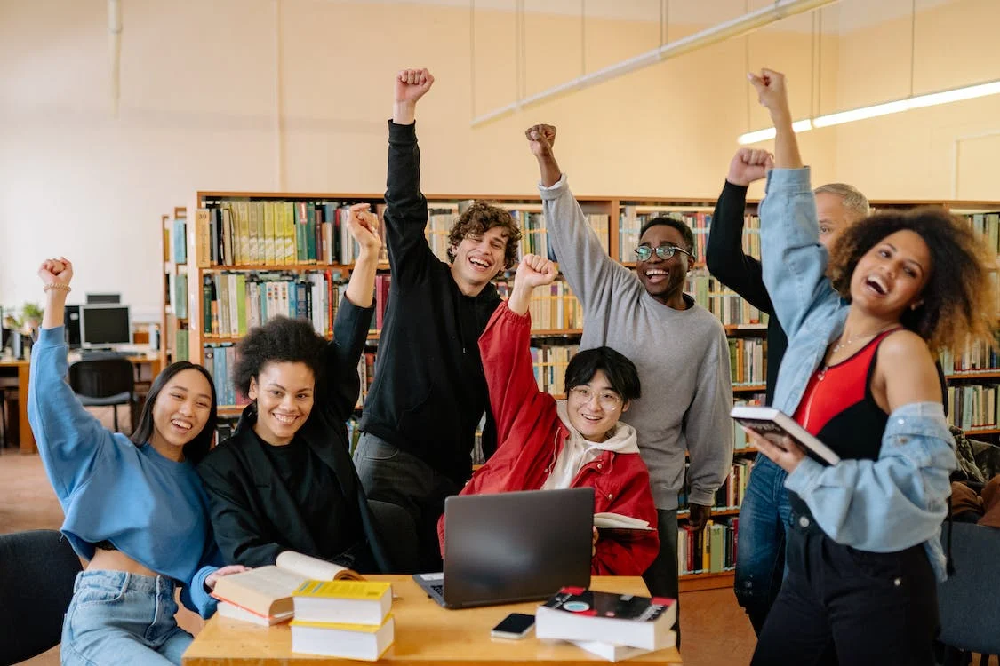

Le BUT MMI c’est quoi ?

Un BUT accessible à tout titulaire d’un baccalauréat, général ou technologique (STMG ou STI2D).


Parcoursup est la plateforme nationale et officielle sur laquelle tu vas faire tes vœux d’orientation pour entrer en études supérieures, après le bac ou lors d’une potentielle réorientation.En 2024, Parcoursup référence plus de 20.000 formations (dont les BUT).